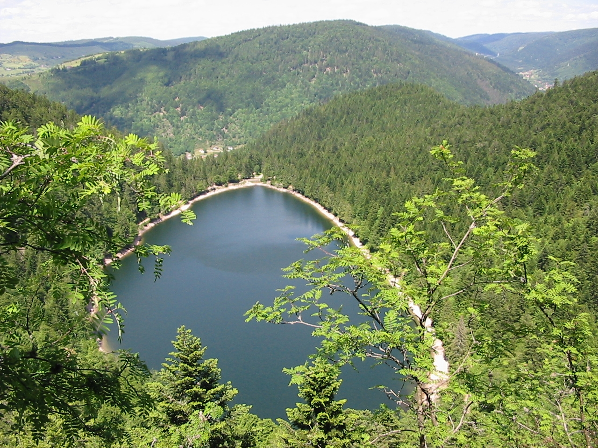

Découvrir Nancy
Prendre le temps
de visiter la ville.
Se promener dans Nancy, regarder ce qui nous attire et découvrir la ville à notre rythme pendant le séjour.
Pendant le séjourChapitre 02 · 15—17 décembre
Du 15 au jeudi 17 décembre, Nancy est notre point de départ pour découvrir la ville, voir nos proches et randonner dans les Vosges.
Découvrir le séjourJeudi 17 décembre · Les Vosges
Pour cette journée, cap sur La Bresse et le lac des Corbeaux. Une randonnée dans les Vosges pour prendre l’air et découvrir ce paysage entouré de forêt.
L’office de tourisme indique que la route du lac est fermée en hiver et que le sentier vers la Roche du Lac n’est pas praticable à cette saison. Nous adapterons l’itinéraire aux conditions du jour.
Informations de l’office de tourisme
Pendant le séjour
Autour de la journée prévue dans les Vosges, on garde du temps pour Nancy et les retrouvailles.
Découvrir Nancy
Se promener dans Nancy, regarder ce qui nous attire et découvrir la ville à notre rythme pendant le séjour.
Pendant le séjourLes retrouvailles
Rester un peu ensemble et profiter de ces quelques jours.
Se voir à Nancy si les disponibilités le permettent.
Jeudi 17 décembre · après la randonnée
Après la journée dans les Vosges, nous pourrions dormir chez mon frère Karim, aux alentours d’Épinal.
À confirmerLe lendemain, cap sur Metz